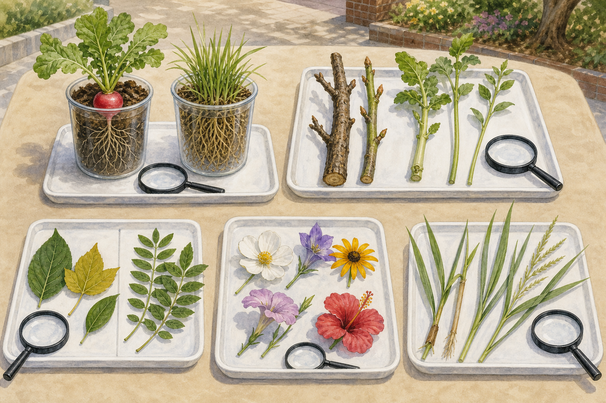

A · 根
透過透明盆比較主根較明顯的蘿蔔與鬚根密集的禾草。只看可見部分，不拔盆栽。

TABLE OBSERVATION · GAME Ⅰ
五站輪流看、畫、比。材料由教師預備，學生不需要挖植物、不折枝，也不靠試吃或嗅聞未知材料判斷。
透過透明盆比較主根較明顯的蘿蔔與鬚根密集的禾草。只看可見部分，不拔盆栽。
比較木質莖與草質莖的硬度、節、分枝和切面；材料由教師預先準備。
把完整落葉分成單葉、羽狀複葉、掌狀複葉，並指出判斷證據。
只用眼睛與放大鏡數花瓣、看對稱與花序；不拆解未知或稀少花朵。
找禾草的節、狹長葉、葉鞘與平行脈；「草」是生活稱呼，不等於單一植物分類。
組別：＿＿＿＿ 姓名：＿＿＿＿＿＿＿＿ 日期：＿＿＿＿
| 站別 | 我看到的構造 | 形狀／位置 | 我的比較句 | 還不確定 |
|---|---|---|---|---|
| A 根 | ||||
| B 莖 | ||||
| C 葉 | ||||
| D 花 | ||||
| E 草 |